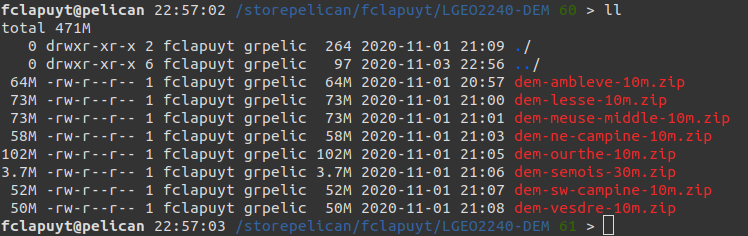
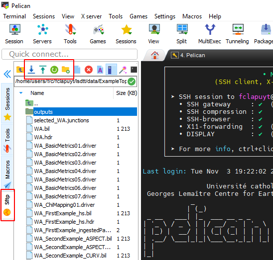
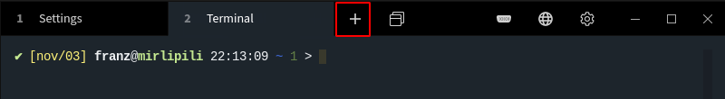

In the lsdtt/data directory, create a new directory for your analyses, e.g. named dem-analysis, and enter it:
cd
cd lsdtt/data
mkdir dem-analysis
cd dem-analysis
All the guidelines are based on this specific directory structure.
IMPORTANT: From now, all parameters in UPPERCASE need to be adjusted according to your study area / login / directory structure…
The DEM of your study are is stored as an archive file .zip in the /storepelican/fclapuyt/LGEO2240-DEM/ directory.

The aim is to copy the .zip directory of your study area into the lsdtt/data/dem-analysis directory, and unzip it into the inputs directory. To do so, execute the following sequence of commands:
# Set the current directory as lsdtt/data/dem-analysis
cd
cd lsdtt/data/dem-analysis
# List files in the repository of the practical sessions
ls /storepelican/fclapuyt/LGEO2240-DEM/
# Copy your archive file into the current directory
cp /storepelican/fclapuyt/LGEO2240-DEM/NAME_OF_STUDY_AREA.zip ./
# Unzip the archive file into the current directory
unzip NAME_OF_STUDY_AREA.zip
# Check that files are properly stored in the current directory
ls
# Remove .zip file
rm -f NAME_OF_STUDY_AREA.zip
Create a parameters file in the dem-analysis directory:
cd
cd lsdtt/data/dem-analysis
vim basic-analysis.driver
Paste the following content that might be something plausible for your study area. Adapt the parameters to your needs, e.g. the name of the input name and output prefix, minimum and maximum basin sizes, river threshold for contributing pixels.
# Parameters for extracting simple surface metrics
# Comments are preceeded by the hash symbol
# Documentation can be found at: https://lsdtopotools.github.io/LSDTT_documentation/LSDTT_basic_usage.html
# These are parameters for the file i/o
# read fname and write fname should be the same, if you want to visualise your outputs
# using LSDMappingTools...
read fname: dem-raw
write fname: dem-raw
channel heads fname: NULL
# Compute filled DEM
print_fill_raster: true
# Compute longitudinal distance from outlets
print_distance_from_outlet: true
# Compute D8 drainage area
print_d8_drainage_area_raster: true
# Parameters for surface metrics
surface_fitting_radius: 50
# Compute surface metrics
print_slope: true
print_aspect: true
print_curvature: true
write_hillshade: true
# Compute basic channel network
threshold_contributing_pixels: 1000
print_junctions_to_csv: true
print_channels_to_csv: true
print_sources_to_csv: true
# Compute basic chi metrics
print_chi_data_maps: true
# Parameters for basin creation
find_basins: true
minimum_basin_size_pixels: 10000
maximum_basin_size_pixels: 1000000
# Create the basin raster
print_basin_raster: true
Run the lsdtt-basic-metric module on the created parameter file:
lsdtt-basic-metrics basic-analysis.driver
It will take some time to run. But you will quickly see that it runs very fast in comparison to QGIS given the amount of pixels to process and outputs created. Many outputs are created (!): filled, dem, slope, aspect, curvature and tangential curvature, hillshade, river network, chi metrics, flow distance… From here, you will begin to understand that learning all the shell / server / LSDTopoTools stuff could really worth it… :-)
For easier use with LSDMappingTools, you should use the input DEM name as
write fnameparameter, i.e.read fnameandwrite fnameshould have the same value.
The LSDMappingTools module enables to visualise data without downloading the data on your local drive and open them in QGIS. Once you have created your outputs, you can plot the DEM with the superimposed basins with the PlotBasicRaster.py tool:
python ~/lsdtt/LSDMappingTools/PlotBasicRasters.py -dir ./ -fname PREFIX_OF_OUTPUTS_FILE -drape_fname PREFIX_OF_OUTPUTS_FILE -PD True -PB True -dpi 300
Outputs of LSDMappingTools are created in a new directory raster_plots that is created in the dem-analysis directory. To visualise them:
# List files in the raster_plots directory
ls raster_plots
# Display the output you want...
display raster_plots/PREFIX_OF_OUTPUTS_FILE_basins_selected_basins.png
In order to keep track of all your analyses, you could, for instance, duplicate the dem-analysis directory for each new analysis, rename the old one and empty the main dem-analysis directory. This could be done using the following sequence of commands:
# Enter data directory
cd
cd lsdtt/data
# Copy dem-analysis directory as dem-analysis-v1 (name to be adapted to your needs)
cp -r dem-analysis dem-analysis-v1
Finally, remove outputs in dem-analysis directory. Outputs are named as follows PREFIX_TYPE-OF-OUTPUTS.EXT, e.g. dem-ambleve-10m_SLOPE.tif, dem-ambleve-10m_TAN.tif or dem-ambleve-10m_SLOPE.tif. To remove all outputs in one command, use the asterisk * to select all files that begin with PREFIX_.
rm -f dem-analysis/dem-raw_*
Data transfer can be done in the two directions, i.e. download data from the server to your local drive (outputs) and upload data from your local drive to the server (i.e. parameters files, river junctions,..).
In the MobaXterm interface, you can simply download and upload files using the file browser on the left panel. Use the buttons on the top of the file browser or right-click on files and directories.

There is no GUI for file transfer in Terminus. Instead, you have two possibilities:
1_Technical_resources for more info.Use a local session of the terminal (using the + in the Menu bar) to execute this type of commands:
scp -r -oProxyCommand="ssh -W %h:%p MY_LOGIN@gwcism.cism.ucl.ac.be" MY_LOGIN@pelican.cism.ucl.ac.be:PATH_TO_FOLDER_ON_THE_SERVER/* PATH_TO_FOLDER_ON_LOCAL_MACHINE

Now, you are able to perform a basic topographic analysis on a very large amount of pixels in a very limited amount of time… Three modules of LSDTopoTools are useful for the analyses to achieve in the frame of the research project:
lsdtt-basic-metricslsdtt-channel-extraction.lsdtt-chi-mapping.The manual for each module contains a lot of information… Focus mainly on “Appendix A” of each manual, which contains the parameters that are available, their explanation, and their potential to fulfill your needs. Each module works with a parameters file that has the same structure than the one you used for the first analysis of your study area. You only need to add or remove parameters in the fill and run it with the proper command.
Each time you connect to the server, you will need to load LSDTopoTools before running the first command. Simply type:
load_LSDTopoTools